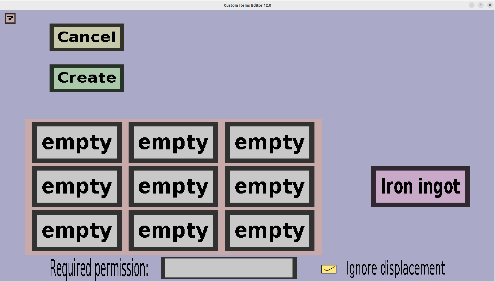

The create shaped recipe menu is the menu from which you can add, edit and delete crafting ingredients for a shaped recipe. It should look like this:
For more information about a shaped recipe, visit the respective page on the Minecraft Wiki The menu consists out of a grid of 3 by 3 buttons, a cancel button, a create button and a result button. The 3 by 3 grid represents the crafting grid found in a crafting table. Each slot is a direct correspondance to that same slot in the crafting table. This can be used to create shaped recipes to for instance create tools from a raw material, or armour pieces from a raw material. Note that these recipes only work in a crafting table, even if you only use a 2x2 grid, the recipe will NOT work when crafting from your inventory.
The 'Cancel' button will take you back to the Recipe Menu, disregarding the changes you made. There is no way to recover any changes you have made after you pressed the 'Cancel' button.
The rightmost purple/pinkish button is the result button, that when clicked opens up a submenu where you can select which type of item will be crafted with the current crafting recipe. For more information, visit this page.
Each ingredient button (those in the 3x3 grid) opens up a submenu with information about the current item in this slot of the crafting grid. Here you can click the 'Back' button to take you back to this page, or one of the buttons on the right to change this ingredient. Unlike the result, ingredients are allowed to be empty, and it is not allowed to copy ingredients from your minecraft server. (Because such ingredients could suddenly change slightly due to minor internal changes, which would make the recipe unusable.) See this page for more information.
If you are adding a lot of crafting recipes, you might note that this requires a lot of time and clicks. To speed this up, you can use the hotkeys c, v, or d while hovering your mouse over an ingredient button. These are for Custom item, Vanilla item and vanilla item with Datavalue respectively.
The 'Create' button does the same thing as the 'Cancel' button except that it does remember the changes you have made. Do note that the changes are not saved physically until you have pressed the 'Save' button in the Item Set Edit Menu.
As you can see, this menu was made for shaped crafting recipes in the 3x3 crafting grid of a crafting table. But, recipes can also be used in the 2x2 crafting grid in the inventory if they have the following shape:
| Ingredient 1 or empty | Ingredient 2 or empty | empty |
| Ingredient 3 or empty | Ingredient 4 or empty | empty |
| empty | empty | empty |
| Ingredient 1 (or empty) | Ingredient 2 (or empty) |
| Ingredient 3 (or empty) | Ingredient 4 (or empty) |